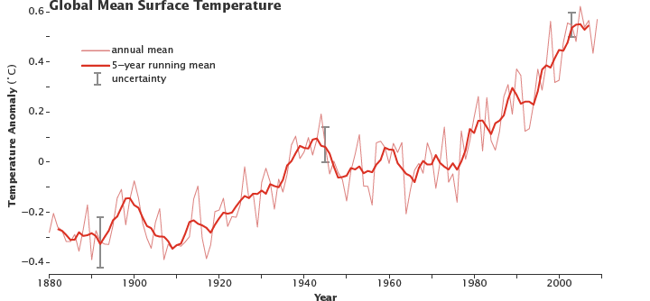

Introduction
The lack of knowledge the average person has regarding global problems is something to look into. For example, Only 57% of the population know that the greenhouse effect refers to gases in the atmosphere that traps heat. Only 45% understand that carbon dioxide traps heat from the Earth’s surface. The point of this is that this lack of knowledge may also be the cause of humanity’s destruction because if we don’t look into our global problems now, humanity won’t be alive to see tomorrow.
But there is a solution, or more like multiple solutions, but we just need to push ourselves to achieve our goal which has been done in the past. For example, in 1985, CFC’s made the first ozone hole above Antarctica because the cold temperature sped up the breakdown of the gas. Because of this, the Montreal Protocol in 1989 occurred which banned the production of ozone-depleting substances. This solved the problem of the ozone layer becoming thin and is a rare environmental success story.
This environmental success story proves that we humans can solve our problems. For example, to reduce the greenhouse effect, we can reduce, reuse, recycle, use less heat/air conditioning, drive less, buy energy-efficient products, plant a tree, etc. So as we write the Earth's future for this century and on, we ask ourselves, what will our actions be so that someone can celebrate the world that they have avoided in 100 or 1000 years.
| Tempurature | Year | Increase/Decrease per 20yrs |
|---|---|---|
| -0.1°C | 1900 | 0.3°C |
| -0.2°C | 1920 | -0.1°C |
| 0.05°C | 1940 | 0.15°C |
| 0°C | 1960 | -0.15°C |
| 0.1°C | 1980 | 0.25°C |
| 0.4°C | 2000 | 0.3°C |
Raise Awareness
Social Media
Spreading awareness is one of social media's best uses. You can reach out to millions all across the globe with one post. For example, more than a billion people have Facebook, Instagram, Snapchat Twitter, etc downloaded on their phones. Use popular hashtags regarding your topics, work to achieve many followers. If you put in a lot of effort, you might get some big results such as people reducing their carbon footprint.
Stories
For many people around the world, global warming is difficult to comprehend. For instance, there are a lot of people dealing with winter storms and ice rains. So these people may not feel like the planet is getting warmer, but we can reach these people by sharing stories. For example, we can share the difficulties polar bears are facing. This specific story can reach people's hearts because polar bears are a popular animal and people might have the interest to support them.
Get Involved
Carbon Footprint
Your carbon footprint is the total amount of greenhouse gases you produce. To reduce your carbon footprint, you can stop eating or eat less meat, drive less, plant trees and plants, eat organic foods, line-dry your clothes, etc. Out of all these actions, the most effective step you can take is to reduce the amount of meat you eat.
Encourage other People
Solving global warming will require humanity to work together by communicating effectively. It’s time for humans to have more conversations regarding global warming. We can start by asking one another how global warming has affected them and then share our own stories. This may encourage people to make a change in their own way, such as reducing their carbon footprint.

CSS Validated